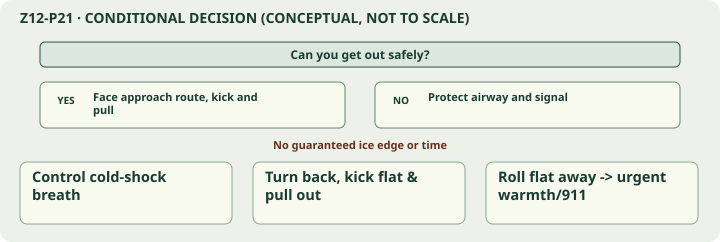

Z12-P21 · Extreme environments · Adapted historical material
Execute cold-water ice self-rescue boundaries when falling through alone
Outline the agency-recommended self-exit sequence during an accidental ice breakthrough while preserving specialist review holds.
When it applies · High-consequence emergency reference only (NOT field-tested instruction; requires qualified ice-rescue training and review).
Equipment · Accessible neck-worn ice picks (if carried during equipped winter activity) and whistle.

Actions
- Protect your airway and regain breathing control as able. If possible, face the direction you came from, which was the last route to support you. It is not guaranteed safe ice.[X19]
- If able to self-exit, get your body horizontal and kick while using the edge or ice picks to pull forward. Avoid any promise that a particular edge will support you.[X19]
- Once on the ice surface, DO NOT stand up immediately (standing concentrates weight on two small footprints)—roll or crawl flat away from the hole toward solid shore, then get urgently into warm dry shelter and medical care.[X18, T03, T02]
Failure recognition · Trying to climb vertically straight up onto thin ice like a pool ladder, exhausting arm strength before swim failure sets in, or standing up immediately on the broken rim.[X18, X02, X03]
Verify · Understand the sequence conceptually during dry land education—staying off uncertain ice completely remains the primary lifesaving rule.[E12, X18, ED]
Stop or change course · If unable to get out, signal for rescue and prioritize keeping your airway clear. Do not wait for a fixed number of minutes or rely on clothing freezing to the ice as a planned technique.[X19, X03]
Evidence and editorial notes
- E12 · Minnesota DNR · Ice Safety (current web edition)
- Section: Ice Safety > basic precautions · Conditions: Minnesota ice edges and travel routes
Support: No ice is universally safe. Strength can differ over short distances; appearance or tracks alone cannot establish a safe crossing.
Limitations: Currents, springs, snow insulation, and freeze-thaw cycles weaken ice invisibly. · Conflicting evidence: None; mandates shore-bound detour for foundational walking parties.
Editorial note: Maintains strict separation from specialized B013 ice chapters. · Specialist reviewer: Ice safety and search and rescue
Primary source · checked 2026-11-24 - T02 · American Red Cross · First Aid Steps (current web edition)
- Section: First Aid Steps > Call 9-1-1 · Conditions: Lay emergency response to unresponsiveness, abnormal breathing or severe bleeding
Support: Activate EMS and get needed equipment. Follow dispatcher directions and act within training.
Limitations: Remote locations may delay EMS arrival, requiring sustained stabilization after activation. · Conflicting evidence: None; aligns with NPS-E.
Editorial note: Mandates early emergency activation and dispatcher adherence. · Specialist reviewer: EMS and wilderness medicine
Primary source · checked 2026-11-24 - T03 · CDC · Preventing Hypothermia (current web edition)
- Section: Warning signs; What to do · Conditions: Cold exposure and suspected hypothermia
Support: Confusion, slurred speech and drowsiness are warning signs. Obtain medical attention and protect from further cold.
Limitations: Shivering may stop as hypothermia worsens; absence of shivering is not reassurance. · Conflicting evidence: None; aligns with WMS cold guidelines.
Editorial note: Core neurological red-flag trigger for stopping activity and calling rescue. · Specialist reviewer: Wilderness medicine
Primary source · checked 2026-11-24 - X02 · Minnesota DNR · Cold Water Safety (current web edition)
- Section: Cold Water Safety > Cold Shock, Swim Failure and Hypothermia · Conditions: Immersion in water below 70°F (especially below 50°F / winter ice water)
Support: Cold shock can cause involuntary gasping and rapid breathing. Grip and swimming may deteriorate rapidly; flotation and early rescue matter. Onset and severity vary.
Limitations: Strong swimmers drown rapidly from cold shock and muscle incapacitation without flotation. · Conflicting evidence: Refutes myth that hypothermia is the only immediate cold-water killer.
Editorial note: Core physiological evidence for Z12 ice-breakthrough and maritime immersion cards. · Specialist reviewer: Cold-water rescue and wilderness medicine
Primary source · checked 2026-11-24 - X03 · NWS · Cold Water Hazards and Safety (current web edition)
- Section: Cold Water Hazards > 1-10-1 Principle and Survival Actions · Conditions: Unexpected immersion in cold lakes, rivers, coastal or marine waters
Support: Protect the airway, use flotation, get out safely if possible, and prioritize rescue. The 1-10-1 mnemonic is descriptive and does not establish deadlines or survival times.
Limitations: Exact individual survival minutes vary widely with body size, clothing, sea state and water temperature. · Conflicting evidence: None; aligns with MN-COLDW and USCG guidance.
Editorial note: Anchors cold-water immersion decision thresholds in Z12. · Specialist reviewer: Cold-water rescue and emergency medicine
Primary source · checked 2026-11-24 - X18 · Minnesota DNR · What if you fall in? (Current web edition)
- Section: Self-rescue after falling in · Conditions: Cold-water ice breakthrough on frozen lakes or rivers
Support: Face the direction you came from if able, regain breathing control, kick and use the edge or picks, and remain low after exit. Prior support is not guaranteed safe ice.
Limitations: Ice rescue carries extreme drowning risk for untrained rescuers; dry practice and qualified rescue review are mandatory. · Conflicting evidence: Directly aligns with B013 P06–P08 and P14; carries high-consequence specialist review hold.
Editorial note: Anchored in Z12 ice-breakthrough cards and logged in the Astra escalation register. · Specialist reviewer: Ice rescue, EMS and wilderness medicine
Primary source · checked 2026-11-24 - X19 · Minnesota DNR · What if you fall in? (Current web edition)
- Section: Self-rescue steps after falling through · Conditions: Person already immersed after ice failure
Support: If able, face the approach route, regain breathing control, kick and pull out, and remain low to the surface after exiting.
Limitations: Prior route is not a strength guarantee; no timed window or operational qualification. · Conflicting evidence: See A01 cross-zone review.
Editorial note: Use only within the stated conditions. · Specialist reviewer: Ice rescue
Primary source · checked 2026-11-24
Source lineage · B013-P06 self-rescue and MN DNR ice safety; adapted historical material · Classification · Adapted historical material.